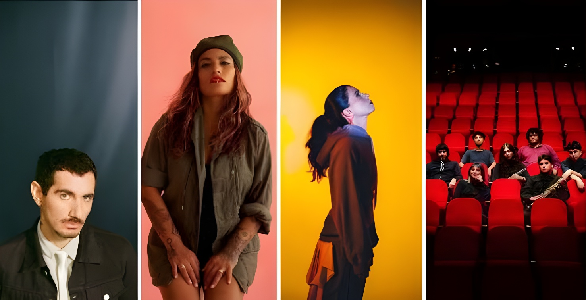

Les 3 et 4 octobre 2026, le Parque Estadio Nacional, à Santiago, accueille la première édition de MUDA (Música, Derechos Humanos, Democracia y Arte). Organisé par la corporation qui gère le site de mémoire de l'ancien stade-prison de la dictature, le festival réunit près de 40 artistes et plus de 20 intervenants, dont l'ex-président Gabriel Boric. Il vise à financer des lieux de mémoire privés de soutien public permanent.
MUDA se tient au Parque Estadio Nacional, à Ñuñoa, dans l'enceinte du site où, après le coup d'État de 1973, a fonctionné le plus grand centre de détention et de torture de la dictature ; environ 20 000 personnes y sont passées, selon les registres du ministère des Biens nationaux. Il est organisé par la Corporación Estadio Nacional Memoria Nacional, présidée par Marcelo Acevedo, en collaboration avec la Coordinadora Nacional de Sitios de Memoria. L'idée remonte à 2023, année des 50 ans du coup d'État, mais le stade accueillait alors les Jeux panaméricains.
Les recettes serviront à financer la corporation et d'autres sites de mémoire du pays qui n'ont pas de financement d'État. Selon la presse, le Chili reconnaît 1 132 centres de détention, de torture et d'extermination de la dictature (1973-1990), mais seuls 17 reçoivent des ressources publiques.
Près de 40 groupes et solistes se partagent trois scènes, nommées Joan Jara, Patricio Manns et Sergio Ortega : Ana Tijoux, Álex Anwandter, Javiera Mena, Inti-Illimani, Illapu, Mauricio Redolés ou encore l'Argentin Víctor Heredia. Le samedi 3 octobre, la scène Sergio Ortega accueille un concert de solidarité avec la Palestine.
Deuxième journée : débat sur la démocratie avec Gabriel Boric à la Carpa del Pensamiento.
Première édition de MUDA au Parque Estadio Nacional, avancée de deux semaines après un chevauchement de dates avec les concerts de BTS prévus dans le même complexe.
MUDA est transféré au Parque Estadio Nacional et prévu sur deux jours, les 16 et 17 octobre.
Date initiale annoncée pour le festival, quatre jours avant le changement de président.
Première idée du festival, à l'occasion des 50 ans du coup d'État de 1973.
Plus de 20 personnalités de la culture, des sciences sociales, du journalisme, de la littérature et de la politique participent aux débats. Parmi elles, quatre Prix nationaux : le sociologue Manuel Antonio Garretón, l'écrivaine Diamela Eltit et les journalistes Faride Zerán et Mónica González, réunies notamment pour une table ronde sur le journalisme et le pouvoir. L'ex-président Gabriel Boric intervient le dimanche 4 octobre dans un débat sur la démocratie.
Le musical « Allende : la odisea interrumpida de un pueblo que quería volar » est aussi à l'affiche, dans la carpa consacrée aux arts de la scène.
Le festival comprend aussi un chapiteau de débats, la « Carpa del Pensamiento », une foire du livre, des visites guidées des sites de mémoire du stade, des fresques collectives, un espace de cuisine patrimoniale et un secteur pour les familles. Une plateforme gratuite cartographie les sites de mémoire du pays.
Le festival se tient alors que José Antonio Kast est président depuis mars 2026. La Tercera le décrit comme un rendez-vous où l'opposition de gauche cherche à montrer son unité, en présence de figures comme Gabriel Boric. Les organisateurs, eux, insistent sur sa vocation : faire de la mémoire un lieu de débat et de rassemblement, et pas seulement de commémoration.
En choisissant un festival pour soutenir des lieux de mémoire sans fonds publics, les organisateurs transforment un ancien centre de détention en espace de rassemblement. Le pari est aussi chiffré : 17 sites financés sur plus de 1 100 reconnus. Le succès de cette première édition dira si la mobilisation culturelle peut compenser, au moins en partie, l'absence de financement public permanent.
Los días 3 y 4 de octubre de 2026, el Parque Estadio Nacional, en Santiago, acoge la primera edición de MUDA (Música, Derechos Humanos, Democracia y Arte). Organizado por la corporación que gestiona el sitio de memoria del antiguo estadio-prisión de la dictadura, el festival reúne a cerca de 40 artistas y a más de 20 invitados, entre ellos el expresidente Gabriel Boric. Su objetivo es financiar sitios de memoria sin apoyo público permanente.
MUDA se celebra en el Parque Estadio Nacional, en Ñuñoa, dentro del recinto donde, tras el golpe de Estado de 1973, funcionó el mayor centro de detención y tortura de la dictadura; unas 20 000 personas pasaron por allí, según los registros del Ministerio de Bienes Nacionales. Lo organiza la Corporación Estadio Nacional Memoria Nacional, presidida por Marcelo Acevedo, en colaboración con la Coordinadora Nacional de Sitios de Memoria. La idea nació en 2023, año del cincuentenario del golpe, pero entonces el estadio albergaba los Juegos Panamericanos.
La recaudación servirá para financiar la corporación y otros sitios de memoria del país que no cuentan con financiamiento estatal. Según la prensa, Chile reconoce 1 132 centros de prisión, tortura y exterminio de la dictadura (1973-1990), pero solo 17 reciben recursos públicos.
Cerca de 40 bandas y solistas se reparten tres escenarios, llamados Joan Jara, Patricio Manns y Sergio Ortega: Ana Tijoux, Álex Anwandter, Javiera Mena, Inti-Illimani, Illapu, Mauricio Redolés y el argentino Víctor Heredia, entre otros. El sábado 3 de octubre, el escenario Sergio Ortega acoge un concierto de solidaridad con Palestina.
Segunda jornada: conversatorio sobre democracia con Gabriel Boric en la Carpa del Pensamiento.
Primera edición de MUDA en el Parque Estadio Nacional, adelantada dos semanas tras una coincidencia de fechas con los conciertos de BTS previstos en el mismo recinto.
MUDA se traslada al Parque Estadio Nacional y se prevé en dos jornadas, el 16 y 17 de octubre.
Fecha inicial anunciada para el festival, cuatro días antes del cambio de presidente.
Primera idea del festival, con motivo de los 50 años del golpe de Estado de 1973.
Más de 20 figuras de la cultura, las ciencias sociales, el periodismo, la literatura y la política participan en los conversatorios. Entre ellas, cuatro Premios Nacionales: el sociólogo Manuel Antonio Garretón, la escritora Diamela Eltit y las periodistas Faride Zerán y Mónica González, reunidas en una mesa sobre periodismo y poder. El expresidente Gabriel Boric interviene el domingo 4 de octubre en un conversatorio sobre democracia.
El musical «Allende: la odisea interrumpida de un pueblo que quería volar» también figura en cartel, en la carpa dedicada a las artes escénicas.
El festival incluye también una carpa de debates, la «Carpa del Pensamiento», una feria del libro, visitas guiadas a los sitios de memoria del estadio, intervenciones muralistas, un espacio de gastronomía patrimonial y un sector para familias. Una plataforma gratuita mapea los sitios de memoria del país.
El festival se celebra con José Antonio Kast en la presidencia desde marzo de 2026. La Tercera lo describe como una cita en la que la oposición de izquierda busca mostrar su unidad, con figuras como Gabriel Boric. Los organizadores, por su parte, subrayan su vocación: hacer de la memoria un lugar de conversación y encuentro, y no solo de conmemoración.
Al elegir un festival para apoyar sitios de memoria sin fondos públicos, los organizadores convierten un antiguo centro de detención en un espacio de encuentro. La apuesta también tiene cifras: 17 sitios financiados de más de 1 100 reconocidos. El éxito de esta primera edición dirá si la movilización cultural puede compensar, al menos en parte, la falta de financiamiento público permanente.